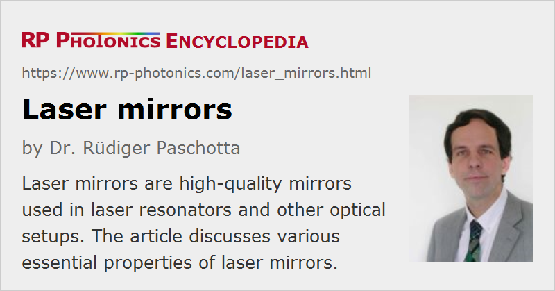

Laser Mirrors
Definition: high-quality mirrors used in laser resonators and other optical setups
More general term: mirrors
More specific terms: output couplers
German: Laserspiegel
Categories: photonic devices, lasers
How to cite the article; suggest additional literature
Author: Dr. Rüdiger Paschotta
The resonator of a laser contains mirrors, which must meet a number of criteria, in particular
- low reflection losses (for highly reflecting mirrors), or (for output couplers) a well-defined transmission in a certain wavelength range
- high optical quality (good flatness over large area, low microscopic roughness) of the surface (avoiding wavefront distortions which could deteriorate the beam quality)
- good resistance against high optical intensities to avoid laser-induced damage (particularly in Q-switched lasers), i.e., a high damage threshold
In almost all cases, dielectric mirrors based on multilayer structures (mostly quarter-wave mirrors) are used as laser mirrors. (The article on dielectric coatings presents some details on the fabrication of dielectric laser mirrors.) Normally, one of the mirrors, which is used as output coupler, has a significant transmission for the laser radiation, whereas all other mirrors are highly reflecting (e.g. with > 99.8% reflectivity). Some mirrors can also be made as dichroic mirrors, allowing the injection of pump light into the gain medium of an end-pumped laser. (For some quasi-three-level lasers, the requirements on such dichroic mirrors can be demanding due to a close proximity of pump and laser wavelength.)
Of course, laser mirrors can also be used to reflect light outside the laser resonator. For example, it is common to use a pair of steering mirrors, each deflecting the beam by ≈ 90°, for sending a laser beam into some apparatus. The mirror mounts of the steering mirrors typically have two or three adjustment screws, which make it possible to adjust the virtual origin and direction of the beam.
Surface Quality
For most laser mirrors, the surface quality in terms of the density of localized imperfections is particularly important. This is mostly to avoid beam distortions, particularly in lasers designed for diffraction-limited output beam quality. As explained in the article on mirrors, the surface quality is often quantified with “scratch & dig” specifications according to the US standard MIL-REF-13830B, or alternatively in a more rigorous fashion based on ISO 10110-7.
Besides, one often quantifies the tolerances for surface irregularity, which is relevant for preserving wavefronts; for example, a λ / 2 irregularity may be sufficient for some lasers, while λ / 8 or better is needed for others. Note however, that meaningful specifications require some more information – in particular:
- It is important to know whether the values refer to the surface or to the wavefronts upon reflection, since the resulting wavefront errors are twice as large.
- One needs to know whether specified numbers are peak-to-peak or r.m.s. values.
- Further, it is of interest whether the numbers are typical or guaranteed worst-case values.
Damage Threshold
Mostly for Q-switched lasers, the threshold for laser-induced damage is important. Some laser designs, involving particularly high optical intensities on resonator mirrors, work only with mirrors having a particularly high damage threshold. That can be achieved by choosing appropriate coating materials in conjunction with high-quality fabrication processes. Note that even for given materials, the damage threshold can be substantially reduced by impurities or microscopic defects.
Residual Transmission
Even highly reflecting laser mirrors have some residual transmission. Particularly in solid-state lasers, this can lead to additional output beams with substantial powers, which are sometimes used for diagnostic purposes, such as for monitoring the laser power without using a part of the output beam. However, problems can arise from the nonuniformity of the residual transmission, which can be strong for highly reflecting mirrors.
Dichroic Properties
Many laser mirrors simply need to be highly reflecting for laser wavelength. In some cases, however, one needs additional properties, for example high transmission for pump light at a shorter wavelength. One then needs to use dichroic mirrors with a more sophisticated then-film design. For example, Figure 2 shows the reflectivity spectrum of a short-pass mirror, which could be used for an end-pumped Nd:YAG laser: pump light at 808 nm, for example, is well transmitted, while laser light at 1064 nm is fully reflected.

In other cases, it is necessary to have high resonator losses at unwanted laser lines. For example, a Nd:YAG laser can be forced to operate at 946 nm if the stronger laser line at 1064 nm is a sufficiently suppressed by high transmissivity of at least one mirror in the resonator.
Mirror Substrates
Usually, laser mirrors are fabricated based on mirror substrates made of some glass (e.g. BK7 or fused silica) or glass ceramics, but it is also possible to deposit mirror coatings directly on a laser crystal (or glass), e.g. for monolithic lasers. Typical mirror substrates are of cylindrical shape, with a diameter of e.g. 1 inch (≈ 25.4 mm) or 0.5 inch, and a thickness of e.g. 6 mm. Even for highly reflecting mirrors, some substrate properties can be important, in particular the surface quality, but also high stiffness, a low thermal expansion coefficient and/or a high thermal conductivity (to avoid thermal bulging in high-power lasers). For partially transmitting mirrors, it can also be important to have a high optical homogeneity (to avoid beam distortions for the transmitted light) as well as low absorption and scattering losses.
Mirror substrates may have curved surfaces, leading to focusing or defocusing laser mirrors. The effective focal length is one half the curvature radius, assuming normal incidence. For strong curvature, e.g. with a radius of curvature well below 10 mm, it can be difficult to obtain high-quality mirror coatings. Some specialists can make good mirrors with radii of the order of 1 mm.
For more details, see the article on mirror substrates.
Mounts for Laser Mirrors
Laser mirrors are often placed on adjustable mounts (see Figure 2). By turning two or three adjustment screws, one can align a laser resonator, for example. High-quality mounts allow for stable mounting while applying little mechanical stress to the mirror substrate, and exhibit a long-term stable mirror orientation with little influences of temperature changes.
Special Mirror Types
Special types of dielectric mirrors such as chirped mirrors (or other kinds of dispersive mirrors) can also provide a suitable amount of chromatic dispersion in the resonator of a mode-locked laser. It may then be possible to avoid the use of, e.g., a prism pair and thus to construct fairly compact femtosecond lasers.
There are also supermirrors with extremely low reflection losses, but these are rarely used in laser resonators.
Metal-coated mirrors, such as silver mirrors, are normally not suitable for laser resonators, because they have substantially higher reflection losses and are also not suitable as output couplers. Further, they tend to oxidate on the surface and thus to lose in surface quality and reflectivity. However, CO2 lasers usually require metal-coated first surface mirrors, e.g. with a gold coating on a copper substrate. There are also some other kinds of first surface mirrors which are suitable for use in laser resonators.
Suppliers
The RP Photonics Buyer's Guide contains 110 suppliers for laser mirrors. Among them:
Questions and Comments from Users
Here you can submit questions and comments. As far as they get accepted by the author, they will appear above this paragraph together with the author’s answer. The author will decide on acceptance based on certain criteria. Essentially, the issue must be of sufficiently broad interest.
Please do not enter personal data here; we would otherwise delete it soon. (See also our privacy declaration.) If you wish to receive personal feedback or consultancy from the author, please contact him e.g. via e-mail.
By submitting the information, you give your consent to the potential publication of your inputs on our website according to our rules. (If you later retract your consent, we will delete those inputs.) As your inputs are first reviewed by the author, they may be published with some delay.
See also: mirrors, mirror substrates, dielectric mirrors, dielectric coatings, dichroic mirrors, laser resonators, output couplers, supermirrors, The Photonics Spotlight 2006-10-22
and other articles in the categories photonic devices, lasers
|  |
If you like this page, please share the link with your friends and colleagues, e.g. via social media:
These sharing buttons are implemented in a privacy-friendly way!